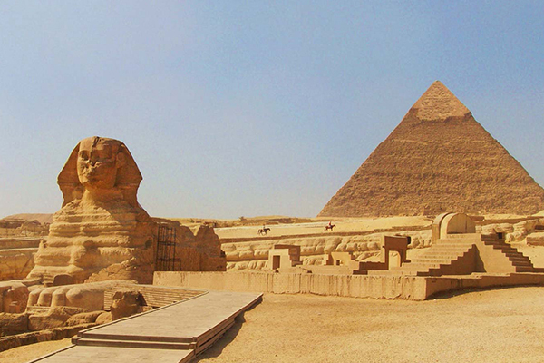

1.พีระมิดแห่งกีซา (Great Pyramid of Giza)
พีระมิดที่ใหญ่โตและเก่าแก่ที่สุดในหมู่พีระมิดทั้งสามแห่งกิซ่า เชื่อว่าสร้างขึ้นในสมัยฟาโรห์คูฟู แห่งราชวงศ์ที่ 4 ของอียิปต์โบราณ ผู้ที่สร้าง คือ กษัตริย์คีออปส์ (CHEOPS) หรือ คูฟู (Khufu), กษัตริย์คาเฟร(Khafre) และ กษัตริย์คูเร (Menkaure) ซึ่งปกครองอาณาจักรอียิปต์เมื่อประมาณ 2,600 ปีก่อนคริสตกาลหรือกว่า 4,600 ปีมาแล้ว สร้างขึ้นเพื่อเป็น ที่ฝังพระศพของกษัตริย์อียิปต์โบราณ ชาวอียิปต์ในสมัยนั้นเชื่อเรื่องชีวิตหลังความตาย ดังนั้นจึงต้องแน่ใจว่ากษัตริย์ของพวกเขาจะทรงมีทุกสิ่งทุกอย่างที่จำเป็น สำหรับโลกหน้า พวกเขาได้ฝังทรัพย์สินและสิ่งของส่วนพระองค์ไปพร้อมกัน สิ่งที่นักโบราณคดีค้นพบเป็นจำนวนมากในห้องเก็บสมบัติของปิรามิดได้แก่เพชร พลอย อาหาร เครื่องเรือน เครื่องดนตรี และอุปกรณ์ล่าสัตว์
Create at 2584-2561 BC